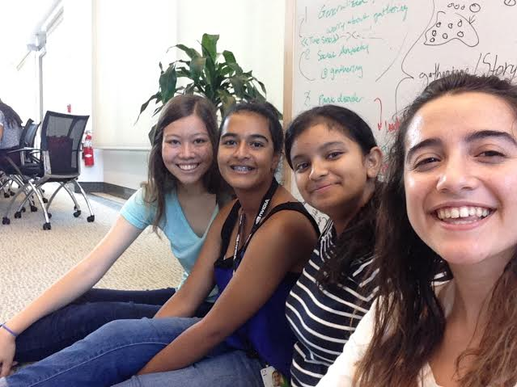

This game was created to raise awareness for the different types of anxiety that are present in todays society. The game takes the user on a point of view experience of someone who suffers from generalized and social anxiety disorders. Accompanied with helpful tips, this is useful simulation to learn how to help people who suffer from these anxiety disorders.
It is estimated that 40 million people in the U.S. who are 18 or older suffer from some type of anxiety disorder. Anixety disorders are easily treatable, yet only 33% of those people suffering recieve treatment.
The goal for the game is to both increase awareness for anxiety, and be able to seperate anxiety and depression from each other. Even though they are commonly present together in sufferers, they are two different disorders, and we wanted to create a seperation between the two for maximum effect.
You can click on the different links which will redirect you to the correct page.
Feel free to email us to provide some feedback on our templates, give us suggestions for new templates and themes, or to just say hello!

Left to Right: Emily Wagner, Archisha Majee, Ayushi Srivastava, Rebecca Fried